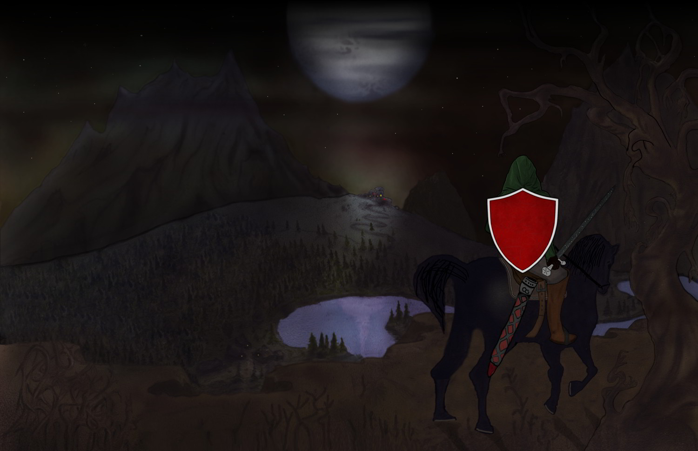

Taribald Rac Karahann, člen řádu legendárních Rudých Štítů, je pověřen vyšetřením zvráceného masakru vesnice na Stinných Vrších.
Cesta do zapadlé části království, skryté za rozlehlým a tajuplným Hluchým Hvozdem, pro něj není ničím jiným než trestem a vyhoštěním.
Ne prvním v jeho životě.
Přesto je odhodlán dostát svému poslání a vypátrat a zabít monstrum, které zaútočilo na tento zaostalý kraj.
Zbytek království může na obyvatele Stinných Vrchů shlížet s opovržením, ale i tak je Taribaldovou povinností, jakkoliv je to pod jeho úroveň, je ochránit.
Ve světě obývaném monstry, jak nadpřirozenými, tak v lidské kůži, jak dalekosáhlé následky může tato zdánlivě nevýznamná událost mít?
~
Malý příběh, odehrávající se ve stínu velkých historických událostí, se rozprostírá na 270 stranách.
Ebook je ke stažení zdarma.
Chceš-li mne ale podpořit, to nejlepší, co můžeš udělat je říct o knížce někomu dalšímu.
Pokud chceš přeci jen podpořit finančně, můžeš tak učinit tady.
Zanech hodnocení na jednom z těchto webů:
GoodReads | Databáze Knih | Facebook

Klikni pro spuštění...